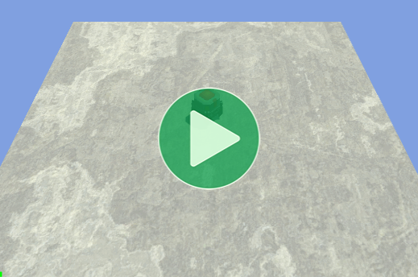
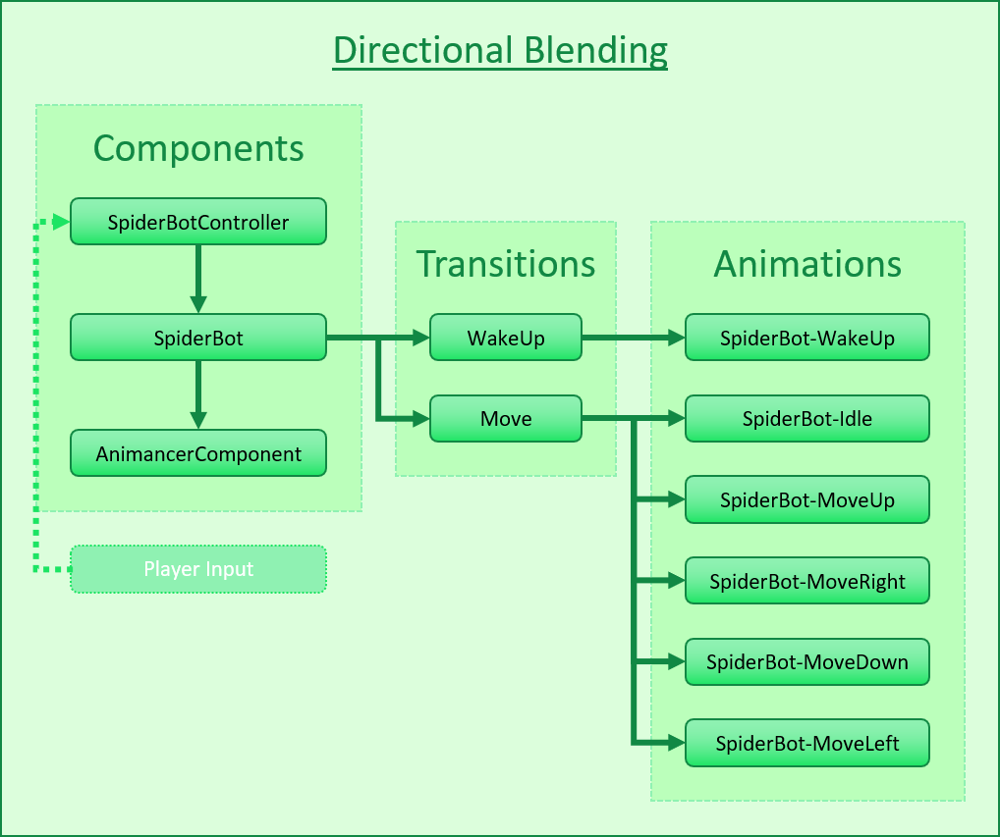
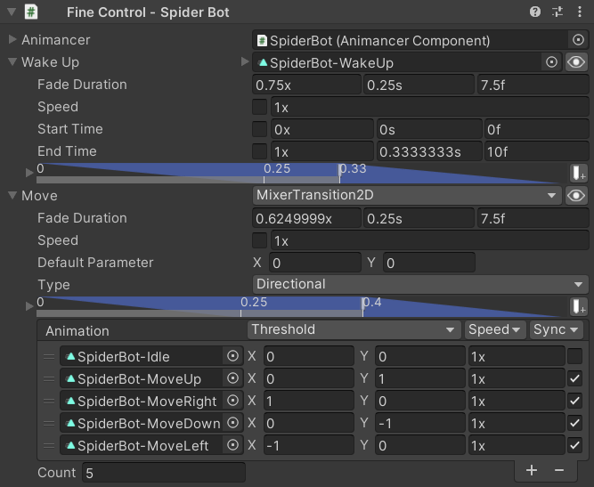
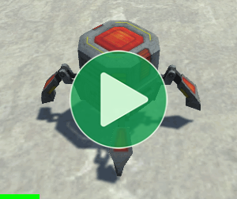
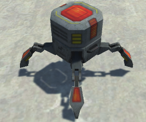
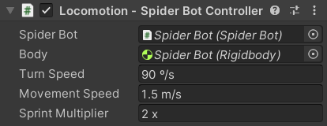

Location: Assets/Plugins/Animancer/Examples/03 Locomotion/03 Directional Blending
Recommended After: Speed and Time
Learning Outcomes: in this example you will learn:
How to move a
Rigidbodyaround the scene.How to use 2D Mixers to allow movement in any direction.
This example expands upon the Speed and Time example by replacing the movement animation with a 2D Mixer to allow movement in any direction and a Rigidbody so that the bot can actually move around the scene.
Pro-Only Features are used in this example: Mixers. Animancer Lite allows you to try out these features in the Unity Editor, but they're not available in runtime builds unless you purchase Animancer Pro.

Summary
- Controlling the
velocityof aRigidbodycomponent allows a character to move around the scene, but usingAddForceis generally recommended. - 2D Mixers can blend animations to allow diagonal movement without needing new animations for each specific movement direction.
Overview
The code structure is actually very similar to the Speed and Time example, but it controls the SpiderBot with a SpiderBotController instead of a UI Toggle and the Move transition is now a 2D Mixer instead of just a single animation:

Spider Bot
The bot in this example uses the SpiderBot script from the Speed and Time example, but with its Move transition configured differently:
| Speed and Time Example | In This Example |
|---|---|
In that example it used a ClipTransition to play a single animation. |
In this example it uses a MixerTransition2D to blend between multiple animations. |
 |
 |
Neutral Blending
Note that even though the Move mixer is only actively used while the bot is moving, it's also used while going back to sleep which means it needs to properly account for having its Parameter set to (0, 0). It does this by having an Idle animation with its Threshold at (0, 0).
| Without Central Idle | With Central Idle |
|---|---|
|  |  |
| Without an Idle animation, it has to blend between all 4 directions and doesn't look like it's actually standing still. | With an Idle animation, it actually stands still (because the "animation" is just a single pose). |
Controller Fields
The bot in this example is using two scripts:
| Code | Inspector |
|---|---|
|
 The fields are fairly straightforward: just some references to theSpiderBot and Rigidbody components we will be controlling and some float values to control the turning and movement speeds (with appropriate Units Attributes to indicate their units of measurement in the Inspector). |
Initialization
The definition of the SpiderBot script's Move field was explained in the Planning Ahead section of the Speed and Time example.
If we had defined it in this script, we could have hard coded it as a MixerTransition2D _Move field which would allow us to control its blending by setting the _Move.State.Parameter.
But since it's defined as an ITransition, it could be any transition and the compiler doesn't know that it's actually a Mixer in this scene. This can be solved adding an Awake method which:
- Creates the transition's
AnimancerState. - Type Casts it to the mixer type we are expecting (
MixerState<Vector2>). - Stores it in a field (
_MoveState) so that we will be able to control that field'sParameterlater on.
private MixerState<Vector2> _MoveState;
private void Awake()
{
var state = _SpiderBot.Animancer.States.GetOrCreate(_SpiderBot.Move);
_MoveState = (MixerState<Vector2>)state;
}
Note that if we were to configure the Move field with a different Transition Type then that second line would throw an exception because the state isn't a MixerState<Vector2>.
Update
We need this script to do quite a few things every Update:
- Use a field to store the direction we want to move so that we can calculate it in
Updateand use the most recent value inFixedUpdate(the Input section explains theGetMovementDirectionmethod):
private Vector3 _MovementDirection;
private void Update()
{
_MovementDirection = GetMovementDirection();
- If the movement is not zero, we want the
SpiderBotto be moving, but otherwise we want it to be asleep:
if (_MovementDirection != default)
_SpiderBot.IsMoving = true;
else
_SpiderBot.IsMoving = false;
Since both branches are setting the same value, we can actually replace that if/else with a single statement:
_SpiderBot.IsMoving = _MovementDirection != default;
While Moving
- Setting
_SpiderBot.IsMoving = true;doesn't necessarily mean the bot is actually moving right now because it could be in the middle of waking up. So instead we check if the movement state is playing and not fading out using itsIsActiveproperty:
if (_MoveState.IsActive)
{
- Rotate towards the same Y angle as the camera.
transform.eulerAnglesrepresents the rotation of an object around each axis, so theyvalue is the rotation around the Y axis (up and down) which we can just move towards the camera's angle:
var eulerAngles = transform.eulerAngles;
var targetEulerY = Camera.main.transform.eulerAngles.y;
eulerAngles.y = Mathf.MoveTowardsAngle(eulerAngles.y, targetEulerY, _TurnSpeed * Time.deltaTime);
transform.eulerAngles = eulerAngles;
Often you would have a character rotate based directly on player input or to face its weapons towards a target, but in this example we just need something to demonstrate rotation for the next step to be relevant. You can Right Click and drag to rotate the camera using the Orbit Controls script.
- The movement direction is in world space, so we need to convert it to the bot's local space to be appropriate for its current rotation (otherwise the parameter values wouldn't make sense in relation to each of the animations). There are various different ways this calculation could be performed, but a simple one is to use Dot Products to determine how much of the
_MovementDirectionlies along each of the bot's local axes (transform.rightandtransform.forward). Then we can just apply that value to the Mixer'sParameter:
_MoveState.Parameter = new Vector2(
Vector3.Dot(transform.right, _MovementDirection),
Vector3.Dot(transform.forward, _MovementDirection));
- Set its
Speedto sprint if you are holding Mouse Button 0 (Left Click) to make the bot "sprint":
_MoveState.Speed = ExampleInput.LeftMouseHold ? _SprintMultiplier : 1;
We used the Conditional Operator to do that with a single line, which would be equivalent to the following:
if (ExampleInput.LeftMouseHold)
_MoveState.Speed = _SprintMultiplier;
else
_MoveState.Speed = 1;
While Stationary
- Otherwise if the movement state is not playing or is fading out, stop moving:
else
{
_MoveState.Parameter = default;
_MoveState.Speed = 0;
}
}
Input
Rather than using keyboard input to control the bot (which would be limited to 8 directions), we will have it follow the mouse cursor to demonstrate movement in any direction. Using some Vector Math and Raycasting.
- Get a ray from the main camera in the direction of the mouse cursor:
private Vector3 GetMovementDirection()
{
var ray = Camera.main.ScreenPointToRay(ExampleInput.MousePosition);
- Do a raycast with it. The
Raycastmethod will returntrueif it hits something, so if it doesn't then we want to stop trying to move:
if (!Physics.Raycast(ray, out var raycastHit))// Note the exclamation mark !
return default;
The Physics Layer of the bot in the scene is set to Ignore Raycast so that the raycast will not hit it. If we had more characters, we would also want them on a layer that the raycast won't hit so that we are only controlling movement based on the fixed environment.
- If the ray did hit something, the
out raycastHitparameter will contain the details of the hit so we can calculate the horizontal direction from the bot to that point using simple Vector Subtraction then zeroing they(vertical) value:
var direction = raycastHit.point - transform.position;
direction.y = 0;
- Calculate how far we could move this frame at max speed:
var movementThisFrame = _MovementSpeed * _SprintMultiplier * Time.fixedDeltaTime;
Note that Time.deltaTime is the same as Time.fixedDeltaTime during a FixedUpdate, but since this method will be called by Update we want to make sure that it compares against the distance it would move during the next physics update (because it is being moved by a Rigidbody) rather than during this rendered frame.
- If the remaining distance is less than the distance we could move this frame, we want to stop moving so just
returnthedefaultVector3(which is the same asVector3.zero):
var distance = direction.magnitude;
if (distance <= movementThisFrame)
{
return default;
}
- Otherwise if it is not close to the destination, Normalize the direction so that we do not change speed based on distance. Calling
direction.Normalize()would do the same thing, but that would need to calculate the magnitude again so this is simply more efficient:
else
{
return direction / distance;
}
}
Fixed Update
The actual movement implementation in FixedUpdate is simple for the sake of keeping the script short. The Rigidbody.velocity is the direction the object is moving with the Magnitude of the vector determining its speed (distance moved per second) so we can just set it every FixedUpdate to go in the most recently calculated _MovementDirection:
private void FixedUpdate()
{
_Body.velocity = _MovementDirection * _MoveState.Speed * _MovementSpeed;
}
Manipulating the Rigidbody.velocity directly is not generally recommended. A proper implementation would usually use AddForce to properly collide with and react to other objects.
Conclusion
This all combines to give us a bot that can chase the mouse cursor around the scene as long as it is pointing at an object with a collider for the raycast to hit (the ground plane) and will rotate itself to match the camera (Right Click and drag to rotate the camera using the Orbit Controls script):
Click here to see the full SpiderBotController script.
using Animancer;
using UnityEngine;
public sealed class SpiderBotController : MonoBehaviour
{
[SerializeField] private SpiderBot _SpiderBot;
[SerializeField] private Rigidbody _Body;
[SerializeField, DegreesPerSecond] private float _TurnSpeed = 90;
[SerializeField, MetersPerSecond] private float _MovementSpeed = 1.5f;
[SerializeField, Multiplier] private float _SprintMultiplier = 2;
private MixerState<Vector2> _MoveState;
private Vector3 _MovementDirection;
private void Awake()
{
var state = _SpiderBot.Animancer.States.GetOrCreate(_SpiderBot.Move);
_MoveState = (MixerState<Vector2>)state;
}
private void Update()
{
_MovementDirection = GetMovementDirection();
_SpiderBot.IsMoving = _MovementDirection != default;
if (_MoveState.IsActive)
{
var eulerAngles = transform.eulerAngles;
var targetEulerY = Camera.main.transform.eulerAngles.y;
eulerAngles.y = Mathf.MoveTowardsAngle(eulerAngles.y, targetEulerY, _TurnSpeed * Time.deltaTime);
transform.eulerAngles = eulerAngles;
_MoveState.Parameter = new Vector2(
Vector3.Dot(transform.right, _MovementDirection),
Vector3.Dot(transform.forward, _MovementDirection));
var isSprinting = ExampleInput.LeftMouseHold;
_MoveState.Speed = isSprinting ? _SprintMultiplier : 1;
}
else
{
_MoveState.Parameter = default;
_MoveState.Speed = 0;
}
}
private Vector3 GetMovementDirection()
{
var ray = Camera.main.ScreenPointToRay(ExampleInput.MousePosition);
if (!Physics.Raycast(ray, out var raycastHit))
return default;
var direction = raycastHit.point - transform.position;
direction.y = 0;
var movementThisFrame = _MovementSpeed * _SprintMultiplier * Time.fixedDeltaTime;
var distance = direction.magnitude;
if (distance <= movementThisFrame)
{
return default;
}
else
{
return direction / distance;
}
}
private void FixedUpdate()
{
_Body.velocity = _MoveState.Speed * _MovementSpeed * _MovementDirection;
}
}